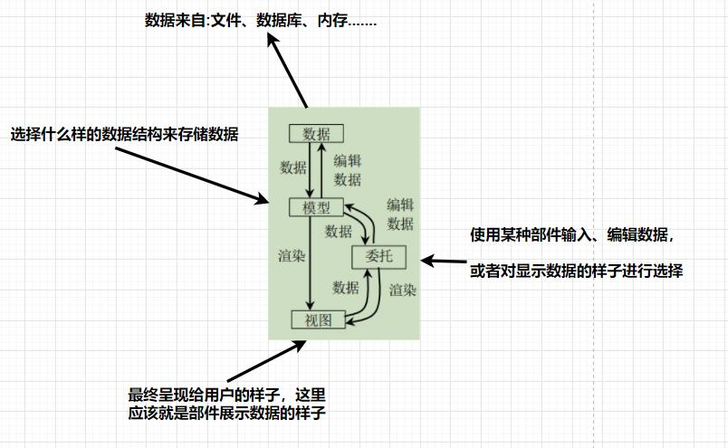
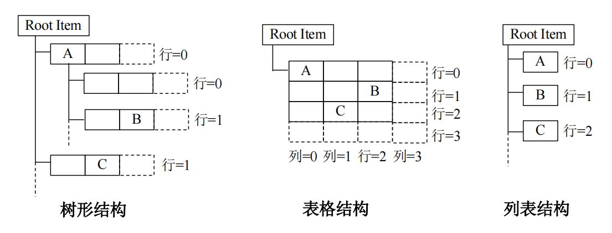

qt的模型-视图框架基于MVC框架,如下:
MVC 把图形界面分为三个部分:模型(Model)、视图(View)、控制器(Controller)。
* 模型 : 用于管理数据,但数据不一定必须位于模型之中,可以是文件中或者数据库中。
* 视图 : 就是呈现在用户面前的界面外观,视图负责把模型中的数据显示给用户。
* 控制器 : 用于处理用户在用户界面的输入。
qt在此基础上,将控制器改为了委托,下图中存储的数据其本身不一定是有数据结构,但是模型通常会把数据组织成一种数据结构(比如list、tree等)
一般来说视图和模型是配套使用的,例如树状模型对应树状视图
模型的抽象类是QAbstractItemModel,视图的抽象类是QAbstractItemView,委托的抽象类是QAbstractItemDelegate

一般使用的方法就是在模型对象中设置数据,然后在视图对象中设置使用的模型
//创建一个2行2列的表格结构的模型
QStandardItemModel model(2,2,this);
//创建一个表格视图
QTableView v1;
//设置模型的数据,使用索引的形式设置每个数据项的值
model.setData(model.index(0,0),123);
model.setData(model.index(0,1),222);
model.setData(model.index(1,0),444);
model.setData(model.index(1,1),555);
//设置视图 v1 的模型
v1.setModel(&model);
//显示视图
v1.show();
访问模型中的数据与模型索引
无论数据被存储为何种数据结构,模型总是以层次结构来表示数据,视图(无论是list还是tree视图)按照此约定来访问模型中的数据
那么如何获取模型中的数据? Qt中提供模型索引来获取数据,下面介绍一下模型索引
Qt使用QModelIndex类实现模型索引
模型索引不像普通索引仅使用一个数字就能描述,一个QModelIndex对象需要使用3个属性进行描述:行号、列号、父模型索引。
虽然模型索引使用行号、列号来定位数据项,但这并不意味着,数据是存储在数组或表格结构中的,使用行号、列号只是允许模型与视图、代理进行通信的一种约定。
之所以需要父模型索引,是因为Qt的模型都是以层次结构组织的,Qt具体实现时,顶级数据项的父模型索引,使用"无效模型索引"来表示
下图展示了常见模型中的模型索引

这里需要说明一下各模型中父模型索引的有效性
树模型中,A的父模型索引是无效的,B的父模型索引是A的索引
表格模型和列表模型中的父模型索引都是无效的
这里直接机器翻译qt helper对委托的介绍
A QAbstractItemDelegate provides the interface and common functionality for delegates in the model/view architecture.
QAbstractItemDelegate为模型/视图架构中的委托提供接口和通用功能
Delegates display individual items in views, and handle the editing of model data.
委托在视图中显示单个项目,并处理模型数据的编辑
The QAbstractItemDelegate class is one of the Model/View Classes and is part of Qt's model/view framework.
QAbstractItemDelegate类是模型/视图类之一,是Qt模型/视图框架的一部分
To render an item in a custom way, you must implement paint() and sizeHint().
要以自定义方式渲染一个项目,你必须实现paint()和sizeHint()
The QStyledItemDelegate class provides default implementations for these functions; if you do not need custom rendering, subclass that class instead.
QStyledItemDelegate类为这些函数提供了默认实现;如果您不需要自定义呈现,则创建该类的子类
在实际使用中,有修改视图显示内容的需求时,如果模型里面的数据不是很容易修改,可以继承QAbstractItemDelegate类,自己根据需求做特定的修改
【TODO】